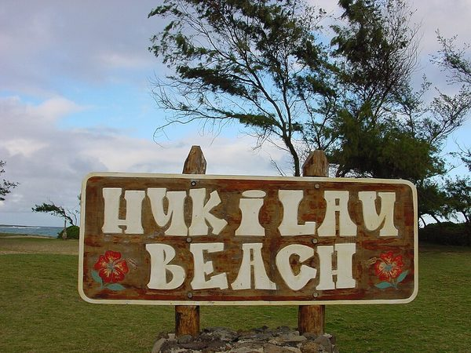

Hukilau Beach
Hukilau Beach is a calm stretch of sand that locals use for picnics, swimming, and watching the sunset. The name comes from a traditional way of fishing as a group, where everyone helped pull in a long net together.

Photo: Wikimedia Commons, licensed CC BY-SA 3.0.